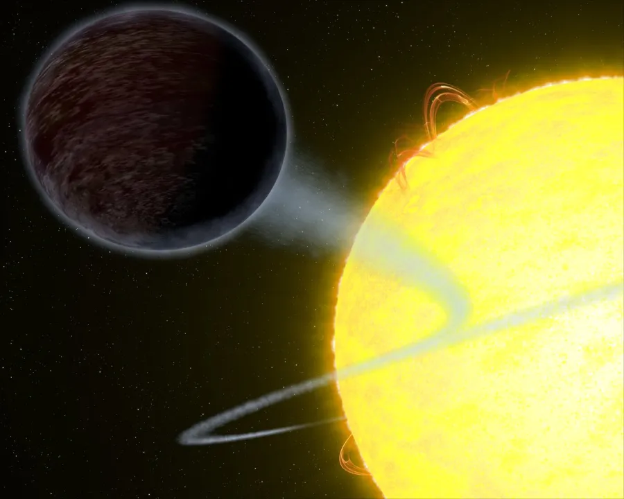

September 14, 2017
WASP-12 b: a pitch-black planet that reflects almost no light
The Hubble Space Telescope was used to measure how much light the hot Jupiter WASP-12 b reflects: 6.4 percent at most. This makes the planet darker than fresh asphalt; it reflects only half as much light as the Moon.
WASP-12 b orbits its star, about 1,400 light-years away, in just over one day. The dayside is about 2,600 degrees Celsius hot – too hot for clouds. The star's pull has stretched the planet into an egg shape; according to earlier Hubble data, gas from its puffed-up atmosphere is streaming toward the star.
Sources: ESA/Hubble: "Hubble observes pitch black planet.", 2017-09-14; ESA/Hubble: "Star devouring a planet (artist's impression).", 2010-05-20